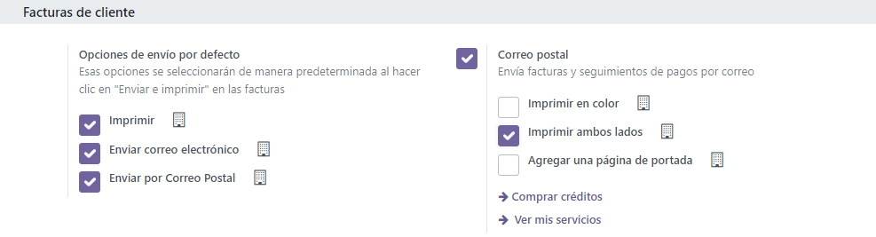

Snailmail¶
Sending direct mail can be an effective strategy for grabbing people’s attention, especially when their email inboxes are overflowing. With Odoo, you have the ability to send invoices and follow-up reports through postal mail worldwide, all from within your database.
Configuration¶
Go to section to activate Snailmail.
To make it a by-default feature, select Send by Post in the Default Sending Options section.
Send invoices by post¶
Open your invoice, click on Send & Print and select Send by Post. Make sure your customer’s address is set correctly, including the country, before sending the letter.
Important
Your document must respect the following rules to pass the validation before being sent:
Margins must be 5 mm on all sides. As Odoo forces the outer margins by filling them with white before sending the snailmail, it can results in the user’s custom being cut off if it protrudes into the margins. To check the margins, activate the developer mode, go to .
A square of 15mm by 15mm on the bottom left corner has to stay clear.
The postage area has to stay clear (
download the snailmail PDF templatefor more details).Pingen (Odoo Snailmail service provider) scans the area to process the address, so if something gets written outside the area, it is not counted as part of the address.
Pricing¶
Snailmail is an In-app purchases (IAP) service that requires prepaid stamps (=credits) to work. Sending one document consumes one stamp.
To buy stamps, go to , click on Buy credits, or go to , and click on View my Services.
See also